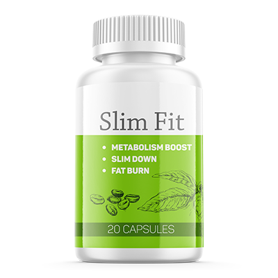

Buenas noches a todos los lectores del sitio web de ATRES player. He decidido compartir con ustedes mi historia, que puede ser no sólo interesante, sino también ayudarles a cambiar su vida para mejor.
Creo que todos ustedes saben quién soy, pero aún así me presentaré mejor. Mi nombre es Renata Ruiz Pérez , soy una modelo chilena. Seguro que muchos de vosotros me animasteis en el concurso Elite Model Look de Chile, donde gané . Otros vieron mi debut en Miss Universo 2005 en Tailandia. Ahora mi vida es hermosa, como cuando mi carrera estaba en su apogeo, pero estoy segura de que muchos de ustedes saben que en la vida no todo es perfecto.
Cuando quedé embarazada, mi hijo
se convirtió en el evento más importante y más feliz de mi vida. Pero junto con el embarazo, comencé a aumentar de peso.
Desafortunadamente, esto me afectó negativamente a mí y a mi carrera. No me desesperé, porque estaba segura de que cuando diera a luz, me pondría en forma rápidamente. ¡Pero estaba muy equivocada! Tuve un hermoso hijo que amo y siempre amaré. Al mismo tiempo, después del parto, me pesé y me di cuenta de que necesitaba perder al menos 15 kg.
Lo más importante que me preocupaba era la carrera, pero resultó que no era el único inconveniente. Escribí una lista de lo que encontré y que redujo enormemente mi comodidad en la vida.
Me empezó a molestar:
- •Empecé a ahogarme: Me resultaba difícil caminar, subir las escaleras. Las actividades físicas activas se convirtieron en un obstáculo para mí, casi me ahogaba, era muy incómodo;
- •Problemas cardíacos: comencé a notar que a menudo me mareaba o me dolía la cabeza. Cuando vi a mi médico, resultó que se trataba de un aumento de la presión, que era causado por mi exceso de peso. Siempre llevaba pastillas para calmar la presión y trataba de no sobreesforzarme;
- •Incomodidad moral: objetivamente hablando, comencé a ser diferente a como era antes, ya no sentía esa gracia en mi estilo y forma en general. Como sea, mis lados influenciaban mucho en la percepción de mí misma.
Los siguientes conciertos y desfiles los tenía ya en 3 meses, así que tuve que perder peso lo antes posible. Y si al principio pensaba que 3 meses era suficiente, ¡pronto me di cuenta de que prácticamente no tenía tiempo!
Lea mi historia hasta el final y descubra cómo pude perder peso.
Para lograr mi objetivo, decidí probar todos los métodos más conocidos para perder peso:
- • Dieta - quizás la forma más común, especialmente entre las mujeres. Pero la verdad es que puede ser más fácil: no coma lo dañino y pierda peso. Mi dieta consistía en verduras y gachas, también rechacé el azúcar y la sal. Es posible que esté familiarizado con este sentimiento: cuando se limita a comer y comer solo lo saludable, después de un par de días siente que su estado de ánimo cambia. Personalmente, me volví irritable y nerviosa, tenía la sensación de que el mundo se había vuelto blanco y negro. En general, la vida era un infierno. Entonces, estuve a dieta durante 3 semanas y, después de pesarme, noté que solo había bajado 3 kg. Desafortunadamente, era demasiado lento para mí. ¡Lo peor es que en un par de semanas, volví a subir de peso! Fue muy triste, puse tanto esfuerzo, pero prácticamente no tuve resultado. Ya quería rendirme, pero afortunadamente había otras opciones.
- • Deporte - decidí utilizar este método por recomendación de mi amigo Diego Boneta, un famoso actor y cantante mexicano. Va a menudo al gimnasio: hace ejercicio con un entrenador personal. Su entrenador me ayudó a desarrollar un programa de pérdida de peso. Me inscribí en un gimnasio y fui allí al siguiente día. Pasé alrededor de 3 horas entrenando, lo que es ya bastante. Hice un conjunto completo de ejercicios, incluyendo la cinta de correr, clase con mancuernas y gimnasia. Todo esto ayudó a que mis músculos se tonificaran, pero al final me ejercité durante aproximadamente un mes y al pararme en la báscula, vi un resultado aún más deplorable en comparación con la misma dieta: bajé 1,9 kg. Eraextremadamente poco. Estaba bastante molesta y comencé a pensar que nada me ayudaría, dado que solo me quedaba un mes antes de las fotos.
- • Intervención quirúrgica - y aquí en una revista leí sobre la posibilidad de deshacerse quirúrgicamente y muy rápidamente del exceso de peso. Estaba intrigada y comencé a buscar una clínica, después de lo cual fui y me inscribí para la cirugía. Mientras esperaba la cirugía, llamé a mi buena amiga Ana y le comenté, ¡pero por su reacción me di cuenta de que estaba muy insatisfecha con lo que había escuchado! Ella me dijo que estaba cometiendo un gran error, porque ese tipo de operación podría causar un daño grave al cuerpo. Además: debido a los cambios en los niveles hormonales, existe la posibilidad de que la operación tenga el efecto contrario. Ana me habló con confianza y me enumeró un montón de posibles malas consecuencias.
Le dije a mi amiga que estaba desesperada, me quedaban 3 semanas y necesitaba perder peso. A esto, ella respondió sin dudarlo: "Si quieres perder peso, hay una manera mucho mejor y más segura que la operación". Después de eso, me contó sobre un producto que quiero compartir con ustedes.
La solución de todos mis problemas
Como escribí anteriormente, Ana me intrigó con un tipo de "remedio maravilloso". Al principio pensé que era una especie de droga que solo parece que dará resultado, pero en realidad es un chupete. Pero, afortunadamente, Ana bajó gracias a él 5kg en poco tiempo, y así que decidí probarlo.
Tomé el producto todos los días y lo primero que sentí fue que después de un par de días sentí mucho menos apetito, no quería comer como antes. Gracias a esto, pude comer alimentos saludables sin problemas, lo que aceleró mi pérdida de peso. ¡Comía verduras, fibra y otras comidas saludables sin sentir hambre! Luego, después de 6 días, me di cuenta de que había bajado 8kg, y no tienes idea de lo emocionada que estaba. Pero me atormentaban las dudas: después de todo, tal vez con el tiempo estos kilos volverían (como ocurrió después de la dieta). Dos semanas después, me di cuenta de que estabamuy equivocada, porque no solo no aumenté de peso, sino que bajé 5 kg más (es decir, en total durante 2 semanas perdí 13 kg de peso). Después de 3 semanas, el peso total bajado era 17.5 kg. No solo encajé en mi horario, sino que incluso lo superé.
Después de tomar el producto, pasaron un par de semanas y el peso no volvió, todo quedó como estaba. Mis conocidos y seguidores se sorprendieron de lo rápido que me puse en forma, por no mencionar a mi esposo, que estaba emocionado: nuestra relación se volvió mucho más cálida si sabes a qué me refiero. Pude volver a actuar e ir a varios programas de entrevistas, me sentía cómoda allí nuevamente, ¡porque estaba en mi mejor forma!
Ahora quiero compartir con ustedes la información sobre este producto y contar los detalles, porque todavía estoy impresionada, y si tiene un problema similar, entonces quiero que su vida también se transforme.

está especialmente diseñado para mejorar la condición de aquellos que sufren de exceso de peso. Restaura la digestión normal de los alimentos y retrasa la absorción del exceso de grasa corporal.
Pero, ¿cómo sucede esto? es un medicamento para perder peso altamente efectivo que funciona no solo mientras duerme, sino también cuando está despierto, eliminando todas las posibles causas de sobrepeso. Los componentes activos del perejil y el hibisco eliminan el exceso de líquido del cuerpo, aliviando rápidamente la hinchazón. La pulpa de Acai y piña estimula la digestión al descomponer la grasa, lo que contribuye a la absorción completa de los alimentos y reduce el apetito. El té verde, la manzana y la espirulina contienen antioxidantes necesarios para la limpieza activa y el rejuvenecimiento del cuerpo. El ácido ascórbico es un inmunoestimulante natural que protege los órganos de los efectos nocivos de sustancias tóxicas.
Principales ventajas de :
- •Destruye las células adiposas desde el interior;
- • Acelera el metabolismo y lo normaliza;
- • Reduce el apetito y bloquea los antojos de dulces y alimentos dañinos;
- • Aumenta el proceso de quema de grasa;
- • Aumenta la inmunidad y proporciona protección contra los virus de la gripe y los resfriados;
- • Reduce la hinchazón y la sudoración;
- • Da vigor, energía y buen estado anímico.
¡Y ahora lo más interesante! Logré contactar personalmente con el fabricante de , le hablé sobre mis resultados, así como sobre mi objetivo de ayudar a las personas con un problema similar. Logramos negociar un descuento para mis seguidores, por lo que ahora podéis comprar esl producto 2 veces más barato! Podéis probar el sin arriesgar mucho dinero y asegurarse de que es efectivo. En el futuro el producto puede agotarse por la gran demanda, además, el descuento no durará en absoluto, por lo que os recomiendo que hagáis el pedido ahora si tú, como yo, quieres cambiar para mejor. Para un mejor efecto, vale la pena el tratamiento y tomar algunos paquetes.